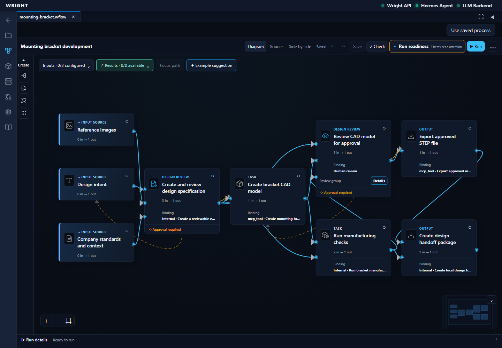
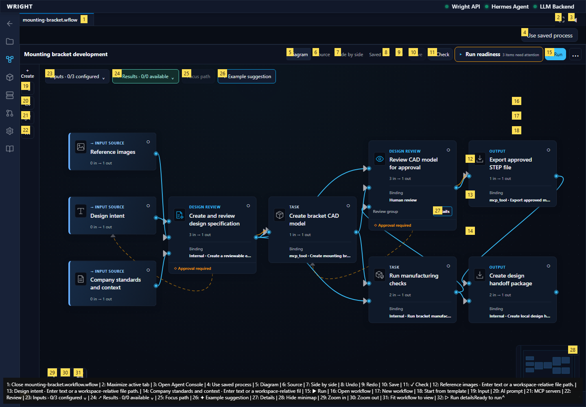

expect(locator).toBeVisible() failed Locator: getByRole('button', { name: 'Workflow files', exact: true }) Expected: visible Timeout: 45000ms Error: element(s) not found Call log: - Expect "to.be.visible" with timeout 45000ms - waiting for getByRole('button', { name: 'Workflow files', exact: true })
blocked
expect(locator).toBeVisible() failed Locator: getByRole('button', { name: 'Workflow files', exact: true }) Expected: visible Timeout: 45000ms Error: element(s) not found Call log: - Expect "to.be.visible" with timeout 45000ms - waiting for getByRole('button', { name: 'Workflow files', exact: true })
Expected: The declared next behavior
Actual: expect(locator).toBeVisible() failed Locator: getByRole('button', { name: 'Workflow files', exact: true }) Expected: visible Timeout: 45000ms Error: element(s) not found Call log: - Expect "to.be.visible" with timeout 45000ms - waiting for getByRole('button', { name: 'Workflow files', exact: true })

